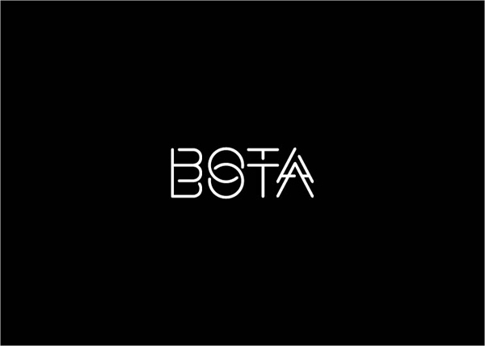
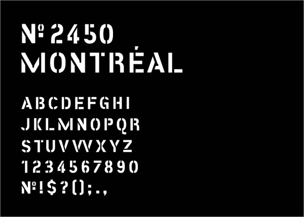
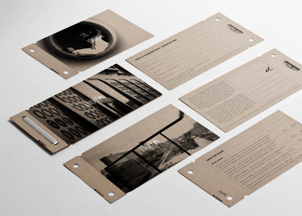
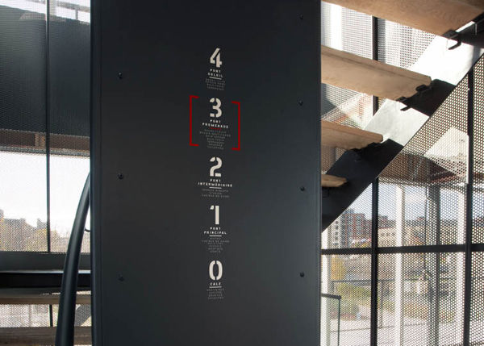
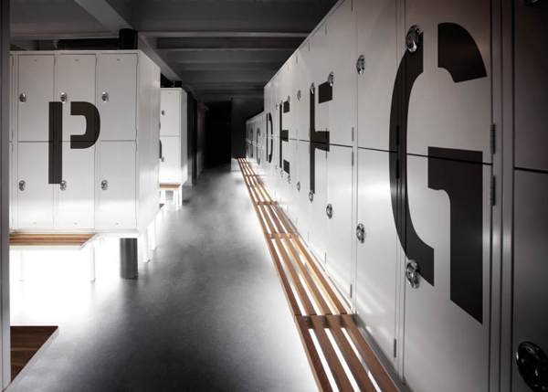
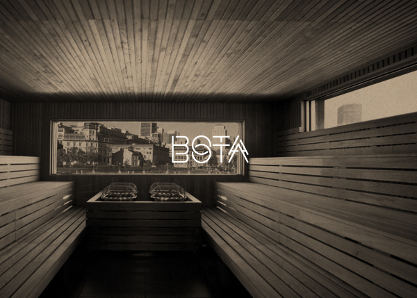

Bota Bota, SPA SUR L’EAU
Well executed branding for Bota Bota spa in Montreal by Gabriel Lefebvre created at Sid Lee. In addition to the branding work Sid Lee is also behind the architecture and design of Bota Bota. If you’re not familiar with Sid Lee’s work spend a few minutes browsing through their stellar portfolio.
Found on Behance.